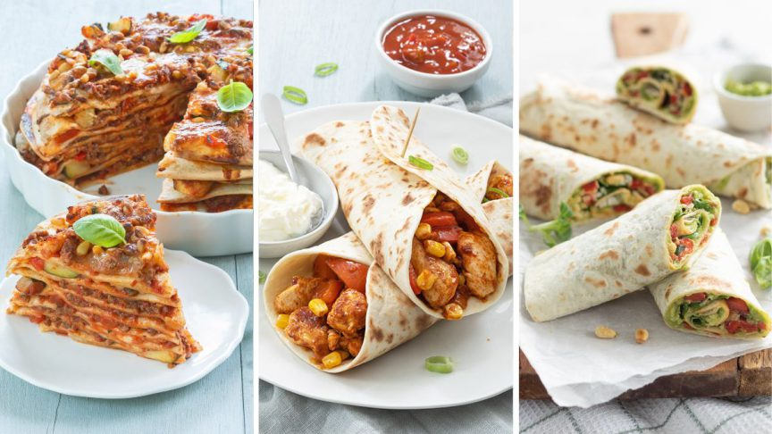

wrap met kip
wrap met gehakt
wrap met kip
wrap in de oven

ingrediënten
wrap deeg
sla
mayonaise
gehakt
bereiding
warm eerst de oven op 200 graden.
nadien saus zetten op de wrap.
daarna zet gehakt, sla en doe je wrap toe.
plooi de wrap en zet de wrap voor 5 min de oven.